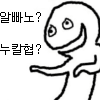
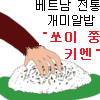
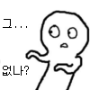
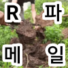

비위 좋은 애들 좀 부럽긴 하네... 난 외국음식은 커녕 지방식 한식요리도 입에 안맞아서 고생하는데 맛이 없다가 아니라 몸에서 안받는 느낌
↳ 답글 · 무삭제요리 · 11.09 17:55:07
ㅋㅋㅋ — 고양이를 튀겨먹자!
ㅇㅇ · 11.09 17:34:02
이재명 대통령님 덕분에 캄보디아 가도 납치도 안 당하고 안전해졌네.. 진짜 수년전부터 납치고문 통장사기가 기승을 부렸는데 윤두창 병신새끼는 아무 조치도 안하고 냅둔걸 잼통은 그냥 파악하자마자 강단있게 딱 조져버리시고 ㄹㅇ 국민안전 생각하는 사람은 이재명 대통령밖에 없는듯
댓글
수집 당시 댓글 209개
· 디시닉 · 11.09 17:30:29
· 무삭제요리 · 11.09 17:53:10
· ㅇㅇ · 11.09 19:24:30
ㅇㅇ · 11.09 17:23:31
ㅇㅇ · 11.09 17:23:41
· ㅈ레이븐 · 11.09 19:34:11
타바코쉬카 · 11.09 17:23:53
· 무삭제요리 · 11.09 17:53:17
ㅇㅇ · 11.09 17:23:57
· 무삭제요리 · 11.09 17:53:21
ㅇㅇ · 11.09 17:25:01
· 무삭제요리 · 11.09 17:53:27
DC전사쿠루미쨩 · 11.09 17:27:43
ㅇㅇ · 11.09 17:28:28
· 무삭제요리 · 11.09 17:53:33
씹덕1010일차 · 11.09 17:29:50
· ㅇㅇ · 11.09 17:36:12
ㅇㅇ · 11.09 17:30:48
· 무삭제요리 · 11.09 17:53:50
디시닉 · 11.09 17:31:13
· 디시닉 · 11.09 17:32:06
· 무삭제요리 · 11.09 17:54:22
· 무삭제요리 · 11.09 17:54:54
· 디시닉 · 11.09 17:55:35
· 무삭제요리 · 11.09 17:57:24
· 무삭제요리 · 11.09 17:57:31
· 무삭제요리 · 11.09 17:58:37
888 · 11.09 17:31:22
· 무삭제요리 · 11.09 17:55:00

ㅇㅇ · 11.09 17:33:03
· 무삭제요리 · 11.09 17:55:07
ㅇㅇ · 11.09 17:34:02
888 · 11.09 17:34:33
ㅇㅇ · 11.09 17:35:36
· 무삭제요리 · 11.09 17:55:19
ㅇㅇ · 11.09 17:35:45

· ㅇㅇ · 11.09 17:36:21
· 무삭제요리 · 11.09 17:55:22

ㅇㅇ · 11.09 17:36:33
· 무삭제요리 · 11.09 17:55:28
ㅇㅇ · 11.09 17:37:07
· 무삭제요리 · 11.09 17:55:36
ㅇㅇ · 11.09 17:37:46
· 무삭제요리 · 11.09 17:55:57
ㅇㅇ · 11.09 17:38:21
· ㅇㅇ · 11.09 17:39:49
· 무삭제요리 · 11.09 17:55:52
ㅇㅇ · 11.09 17:39:50
888 · 11.09 17:40:53
ㅇㅇ · 11.09 17:41:42
· 무삭제요리 · 11.09 17:56:02
ㅇㅇ · 11.09 17:43:21
ㅇㅇ · 11.09 17:44:07
· 무삭제요리 · 11.09 17:56:05
ㅇㅇ · 11.09 17:45:15
ㅇㅇ · 11.09 17:46:34
· 무삭제요리 · 11.09 17:56:10
ㅇㅇ · 11.09 17:46:52
· 무삭제요리 · 11.09 17:56:16
도사의 대리자 · 11.09 17:48:55
도사의 대리자 · 11.09 17:49:01
도사의 대리자 · 11.09 17:49:08
· 디시닉 · 11.09 17:50:35
않되 · 11.09 17:50:57
· 무삭제요리 · 11.09 17:56:25
· 않되 · 11.09 18:00:37
ㅇㅇ · 11.09 17:51:37
· 무삭제요리 · 11.09 17:56:32
ㅇㅇ · 11.09 17:55:42
· 무삭제요리 · 11.09 17:56:39
ㅇㅇ · 11.09 17:56:43
· 무삭제요리 · 11.09 17:56:56
· ㅇㅇ · 11.09 18:00:09
· 무삭제요리 · 11.09 18:01:09
ㅇㅇ · 11.09 18:05:04
ㅇㅇ · 11.09 18:08:19
반바센세 · 11.09 18:10:02
· 무삭제요리 · 11.09 18:20:43
· 반바센세 · 11.09 18:21:52
술담배여자도박 · 11.09 18:15:34
· 무삭제요리 · 11.09 18:20:25
· 술담배여자도박 · 11.09 18:21:08
제갈혜 · 11.09 18:17:44
ㅇㅇ · 11.09 18:18:55
· 무삭제요리 · 11.09 18:21:27
ㅇㅇ · 11.09 18:20:37
· 무삭제요리 · 11.09 18:21:14
publicly0453 · 11.09 18:24:36
ㅇㅇ · 11.09 18:25:19
· 무삭제요리 · 11.09 18:33:17
ㅇㅇ · 11.09 18:39:08
· ㅇㅇ · 11.09 18:39:49
ㅇㅇ · 11.09 18:43:55
· 무삭제요리 · 11.09 18:44:31
ㅇㅇ · 11.09 19:10:27
동방제과 · 11.09 19:13:35
લસશ
키나루디안마기 · 11.09 19:15:06
ㅇㅇ · 11.09 19:34:17
개쌍도
통구이
스타일
ㅇㅇ · 11.09 19:43:48
ㅇㅇ · 11.09 19:48:50
· 무삭제요리 · 11.09 01:36:23
방귀진동연구원수석박사 · 11.09 01:34:04
· 무삭제요리 · 11.09 01:36:30
ㅇㅇ1 · 11.09 01:34:18
· 무삭제요리 · 11.09 01:36:42
ㅇㅇ · 11.09 01:34:59
· 무삭제요리 · 11.09 01:36:32
ㅇ야 · 11.09 01:35:56
· 무삭제요리 · 11.09 01:36:47
ㅇㅇ · 11.09 01:37:13
· 무삭제요리 · 11.09 01:39:46
· ㅇㅇ · 11.09 01:41:11
· ‘ㅅ’ · 11.09 17:18:28
ㅇㅇ · 11.09 01:39:23
· 무삭제요리 · 11.09 01:40:51
ㅇㅇ · 11.09 01:39:23
· ㅇㅇ · 11.09 01:39:43
· 무삭제요리 · 11.09 01:40:17
ㅇ야 · 11.09 01:39:48
· 무삭제요리 · 11.09 01:40:35
· ㅇㅇ · 11.09 01:41:15
· 무삭제요리 · 11.09 01:42:14
· ㅇ야 · 11.09 01:42:44
· ㅇㅇ · 11.09 01:42:49
· 무삭제요리 · 11.09 01:43:53
· ㅇ야 · 11.09 01:44:11
· 무삭제요리 · 11.09 01:46:16
· 디시닉 · 11.09 17:27:59
ㅇㅇ · 11.09 01:42:58
ㅇㅇ · 11.09 01:56:14
· 무삭제요리 · 11.09 01:56:45
ㅇㅇ · 11.09 01:56:28
ㅇㅇ · 11.09 01:58:51
ㅇㅇ · 11.09 02:05:53
· 무삭제요리 · 11.09 02:16:11
· ㅇㅇ · 11.09 17:31:19
씨발놈의새 · 11.09 02:13:49
· 무삭제요리 · 11.09 02:15:12
키위새새 · 11.09 02:25:36
ㅇㅇ · 11.09 02:40:10
· 무삭제요리 · 11.09 02:42:33
ㅇㅇ · 11.09 02:45:28
· 무삭제요리 · 11.09 02:46:55
· ㅇㅇ · 11.09 02:49:39
· 무삭제요리 · 11.09 02:49:54
· ㅇㅇ · 11.09 02:50:57
Undiu · 11.09 02:50:31
ㅇㅇ · 11.09 04:11:45
· 무삭제요리 · 11.09 12:51:01
· ㅇㅇ · 11.09 12:52:04
ㅇㅇ · 11.09 04:56:18
· index · 11.09 17:11:44
초라리즘 · 11.09 06:52:29
ㅇㅇ · 11.09 07:41:48
· ㅇㅇ · 11.09 07:52:49
· 백두산잡초 · 11.09 08:25:40
· 무삭제요리 · 11.09 12:50:23
· 디시닉 · 11.09 17:28:57
들어와라 · 11.09 09:33:28
땨뗘(봇) · 11.09 17:11:04
ㅇㅇ · 11.09 17:11:30
· index · 11.09 17:12:14
· 실베도로롱 · 11.09 17:17:26
ㅇㅇ · 11.09 17:11:53
· 무삭제요리 · 11.09 17:51:33
ㅇㅇ · 11.09 17:12:08
ㅇㅇ · 11.09 17:12:22
· index · 11.09 17:12:52
· 무삭제요리 · 11.09 17:51:39
ㅇ · 11.09 17:12:42
· 무삭제요리 · 11.09 17:51:44
ㅇㅇ · 11.09 17:12:54
· 무삭제요리 · 11.09 17:51:47
ㅇㅇ · 11.09 17:13:07
· 무삭제요리 · 11.09 17:51:52
쿠트라 · 11.09 17:13:30
· 무삭제요리 · 11.09 17:51:56
ㅇㅇ · 11.09 17:14:08
· 무삭제요리 · 11.09 17:52:04
ㅇㅇㅇ · 11.09 17:14:12
· 무삭제요리 · 11.09 17:52:10
ㅇㅇ · 11.09 17:15:15
· 무삭제요리 · 11.09 17:52:17
ㅇㅇ · 11.09 17:16:15
· 무삭제요리 · 11.09 17:52:25
MR4오너 · 11.09 17:17:27
· 무삭제요리 · 11.09 17:52:22
실베도로롱 · 11.09 17:17:48
· ㅇㅇ · 11.09 17:36:00
ㅇㅇ · 11.09 17:18:50
· ㅇㅇ · 11.09 17:18:54
· 무삭제요리 · 11.09 17:52:34

성공소년 · 11.09 17:20:23
· 무삭제요리 · 11.09 17:52:40
원갈이 · 11.09 17:21:09
· 무삭제요리 · 11.09 17:52:46
ㅇㅇ · 11.09 17:22:23
· 무삭제요리 · 11.09 17:53:01
금향 · 11.09 17:23:00
· 타바코쉬카 · 11.09 17:24:04
개댇지 · 11.09 01:33:10
· 무삭제요리 · 11.09 01:35:44
ㅇㅇ · 11.09 01:33:30
· 무삭제요리 · 11.09 01:35:50
ㅇㅇ · 11.09 01:33:36
· 무삭제요리 · 11.09 01:36:02
ㅇㅇ · 11.09 01:33:50
· 무삭제요리 · 11.09 01:36:07
일본인 · 11.09 01:33:53